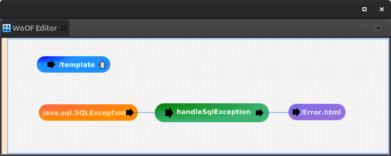

This tutorial demonstrates the ease in handling exceptions within an WoOF web application.
The tutorial will demonstrate this by a template method throwing an exception that is handled by writing the exception to stderr. Though this is a simple example it does demonstrate the ease of handling exceptions.
This tutorial also introduces the @Parameter annotation to allow passing an object between methods.
The following is the template:
<html>
<form action="#{submit}">
<input type="submit" />
</form>
</html>
with the logic throwing the exception:
public class TemplateLogic {
public void submit() throws Exception {
throw new SQLException("Test");
}
}
Pressing the submit button will trigger the exception to be thrown.
The tutorial will demonstrate the ease in which this exception can be handled.
The following shows the configuration for handling the above template exception.
The exception is linked to be handled by the following:
public class ExceptionHandler {
public void handleSqlException(@Parameter SQLException ex) {
// Production code may take some action and would use a Logger
System.err.println(ex.getMessage());
}
}
Once the handling method completes it follows normal WoOF behaviour. In other words, the static error page is then sent to the client.
The @Parameter annotation identifies a value to be passed from the previous method.
The handling of an exception is actually via OfficeFloor functionality. The exception is caught by WoOF and passed as a parameter to the configured method. In this case, the handleSqlException(...) method.
The @Parameter annotation can also be used to obtain the value from the following:
This functionality is useful and provided by the underlying OfficeFloor framework. However, within WoOF the necessity to pass parameters is used typically only for exception handling. The use of dependency injected objects is often a better way to pass state between methods (i.e. HttpRequestStateful).
The remaining configuration indicates that the following static response should be sent.
<html> <body> <p>Technical error has occurred.</p> </body> </html>
It is possible to use the details of the exception within a template to generate a response. However, for simplicity a static resource is used.
The following unit test shows the exception handling by listening in on stderr to ensure the exception message is written to it:
@ExtendWith(OfficeFloorExtension.class)
public class ExceptionHttpServerTest {
@RegisterExtension
public HttpClientExtension client = new HttpClientExtension();
private PrintStream stderr;
@BeforeEach
public void setup() {
// Maintain stderr to reinstate
this.stderr = System.err;
}
@Test
public void ensureHandleException() throws Exception {
// Override stderr
ByteArrayOutputStream error = new ByteArrayOutputStream();
System.setErr(new PrintStream(error, true));
// Submit to trigger the exception
HttpResponse response = this.client.execute(new HttpGet(this.client.url("/template+submit")));
assertEquals(200, response.getStatusLine().getStatusCode(), "Should be successful");
// Ensure handling by logging the failure
String log = new String(error.toByteArray()).trim();
assertEquals("Test", log, "Should log error");
}
@AfterEach
public void reinstate() {
// Reinstate stderr
System.setErr(this.stderr);
}
}
JUnit 4 example:
public class ExceptionHttpServerJUnit4Test {
@Rule
public OfficeFloorRule officeFloor = new OfficeFloorRule(this);
@Rule
public HttpClientRule client = new HttpClientRule();
private PrintStream stderr;
@Before
public void setup() {
// Maintain stderr to reinstate
this.stderr = System.err;
}
@Test
public void ensureHandleException() throws Exception {
// Override stderr
ByteArrayOutputStream error = new ByteArrayOutputStream();
System.setErr(new PrintStream(error, true));
// Submit to trigger the exception
HttpResponse response = this.client.execute(new HttpGet(this.client.url("/template+submit")));
assertEquals("Should be successful", 200, response.getStatusLine().getStatusCode());
// Ensure handling by logging the failure
String log = new String(error.toByteArray()).trim();
assertEquals("Should log error", "Test", log);
}
@After
public void reinstate() {
// Reinstate stderr
System.setErr(this.stderr);
}
}
The next tutorial covers dependency injection.